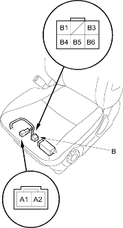
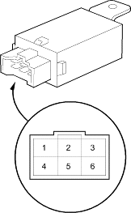

- Remove the front seat (see page 20-87).
- Disconnect the seat heater harness 2P connector (A) from the floor wire harness and 6P connector (B) from the seat heater relay (C).
Wire side of female terminals

- Check for continuity between the A1 and B3 terminals and A2 and B6 terminals. There should be continuity.
If there is no continuity, replace the seat cushion (see page 20-87). - Check for continuity between the B1 and B4 terminals and B1 and B5 terminals. There should be continuity.
If there is no continuity, replace the seat cushion (see page 20-87).
- Remove the front seat (see page 20-87).
- Disconnect the 6P connector from the seat heater relay (A).

- Check for continuity between the No. 6 and No. 5 terminals and No. 6 and No. 4 terminals. There should be continuity.
If there is no continuity, replace the seat heater relay. - Check for continuity between the No. 1 and No. 6 terminals and No. 3 and No. 4 terminals when power and ground are connected across the No. 6 and No. 5 terminals. There should be continuity. If there is no continuity, replace the seat heater relay.